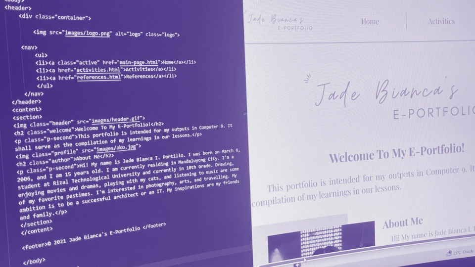

 Have you ever looked at a website and wondered how it was designed and built? I used to think about that too everytime I visited a website. Honestly, I never imagined that I could create one on my own. Not until our professor taught us HTML and CSS when I was in 9th grade during our computer class. It looked difficult at first, but I was curious enough to give it a try and got excited to see what could I create from scratch.
Learning A New Skill
When I first started learning HTML and CSS, I felt like learning a whole new language because every tag and syntax looked unfamiliar to me. I often got confused, especially when my code did not work the way I expected. Sometimes I would feel frustrated and overthink that web designing was not for me. But with practice and patience, I slowly began to understand how HTML and CSS worked together. Each hands-on activity that my professor gave challenged and helped me understand the lessons better. Every time my code finally worked on my monitor, I felt proud of myself. I also enjoyed experimenting with different fonts, layout, and colors too see what worked best. When my code had errors, I would try to solve it on my own. This experience made me realize that learning HTML and CSS was not just a school requirement, but a way to express myself and my ideas.
Creating My Portfolio
For our final project in our computer class, we were tasked to create our own personal portfolio that showed all of the activities that we did in that subject using HTML and CSS. I wanted my portfolio to not only be organized and neat but also refelcting my personality. I spent time planning its layout, choosing readable fonts, and picking the color palette that I liked. I also included interactive elements such as navigation buttons and forms to make it more engaging. While working on it, I noticed that my designing skills were slowly improving each activity. There were times I felt stressed when the paragraphs and images were not aligned. However, fixing those problems on my own felt satisfying. When I finally saw my portfolio come to life, I was very proud of myself because I built something entirely on my own. My personal portfolio reflected how much I have improved since I first starred learning HTML and CSS.
A Reflection of What I've Learned
Learning HTML and CSS was more than just improving my coding skills. It helped me become patient, creative, and more confident in what I can do. What once I found confusing and frustrating became something I truly enjoyed. It also taught me that every challenge can turn into opportunities if I am willing to learn and put effort in it. Now that I am an IT Student, the skills and lessons I have learned from this experience will help me approach challenges with confidence and guide me in my future projects.